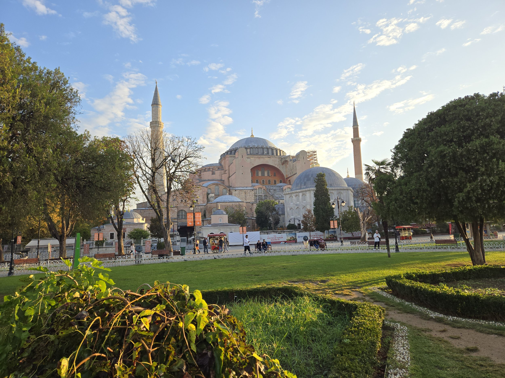
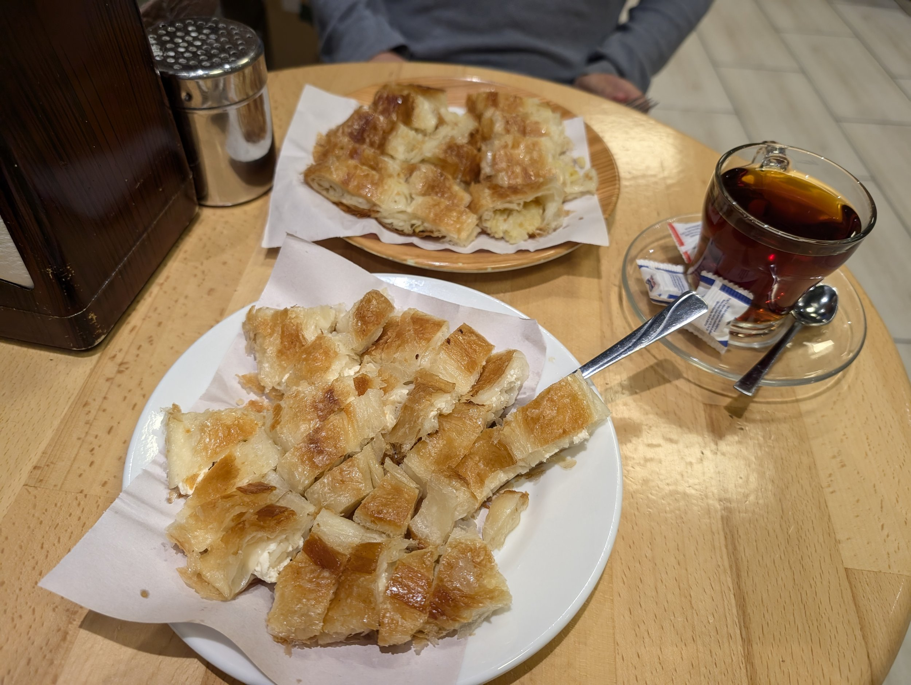
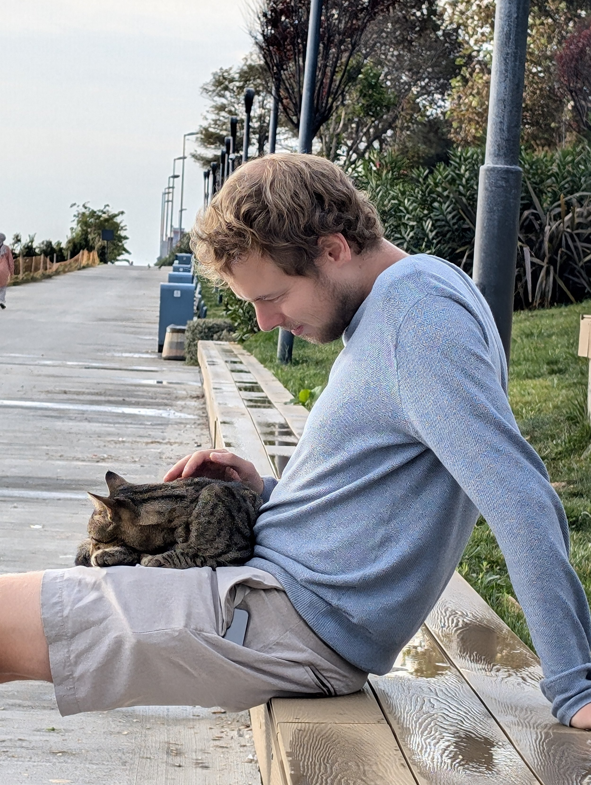
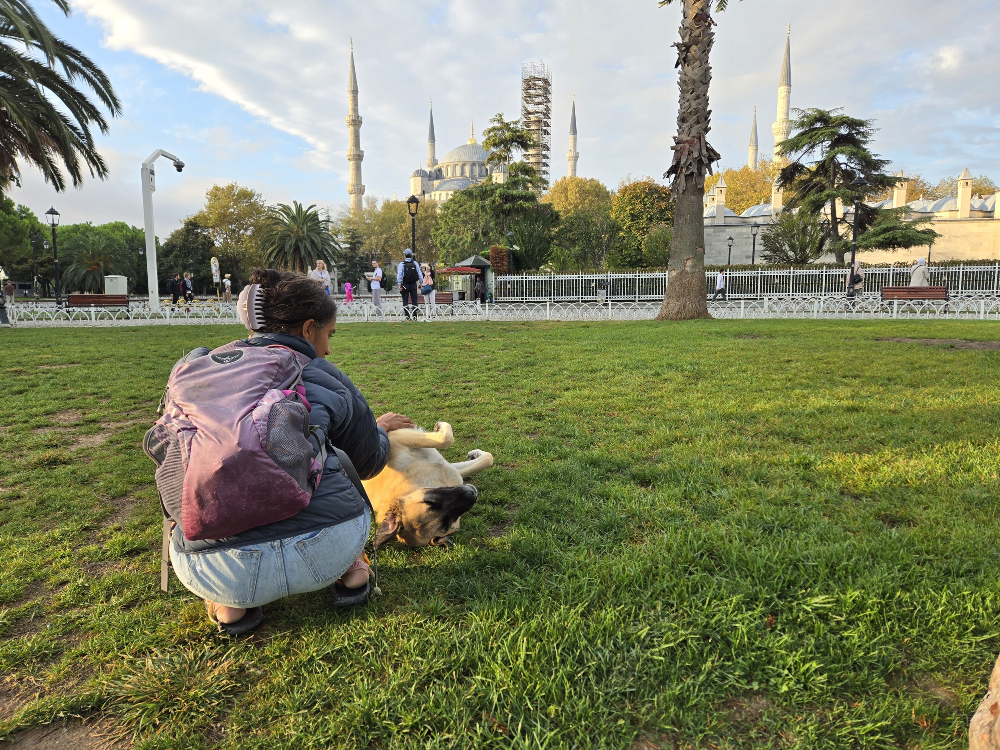
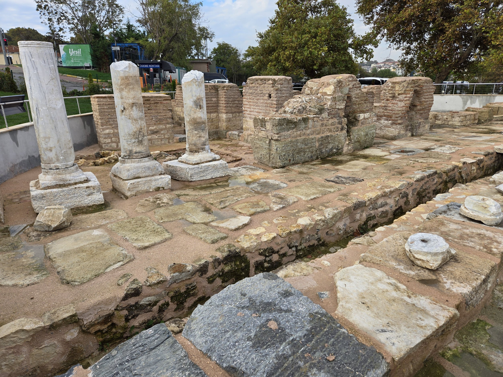
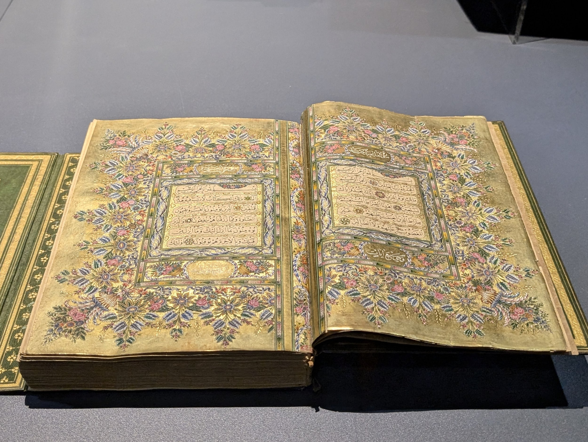
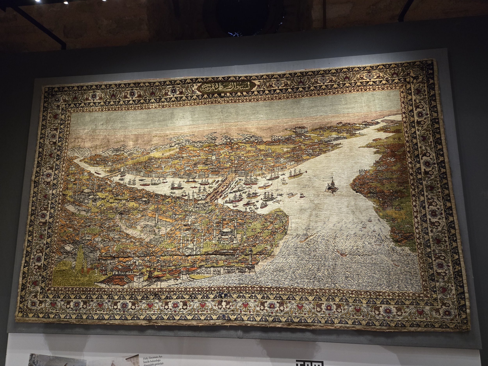
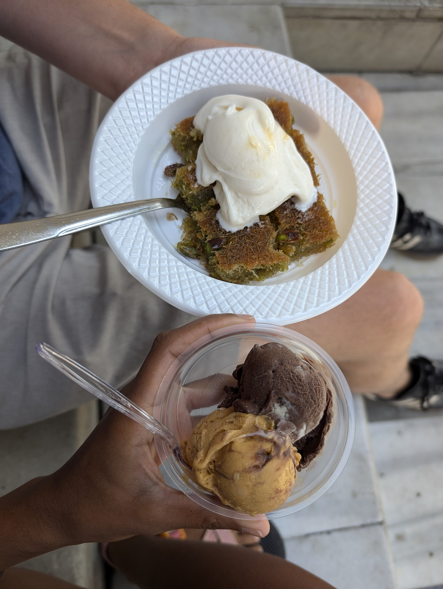
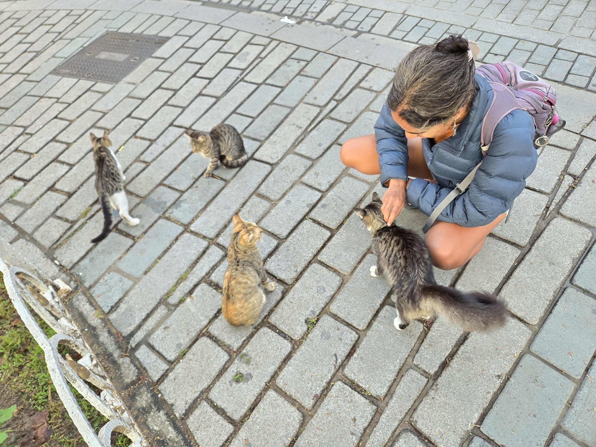

Here’s (roughly) how our conversation went:
Arathi: “Hmm, it looks like the easiest way to get to Jordan is to fly through Istanbul. I see a flight that has a four hour layover which is pretty long, but it’s not bad.”
Kevin: “ICE CREAM! No, I’m just joking, obviously that would be crazy.”
… a beat passes… we stare at each other
Arathi: “There’s another flight later to Amman that gives us nine hours…”
And that is how we ended up spending another nine hours in Istanbul. Because we wanted to eat Turkish ice cream at Bena Ice Cream one more time, a joy that we were robbed off on our disastrous last day in Istanbul where everything was closed. If not on a full year of travel, when else can we arbitrarily decide that we want to revisit a city in a completely different country for one day just to eat ice cream?
>

We landed in Istanbul around 5:30 in the morning and made it into Sultanahmet, the old town with all the main sights of Istanbul, by 6:30am. We dropped off our bags at a hotel (Nannybag is a fantastic app for luggage storage!) and wandered into a börek cafe, one of the very few things open in Istanbul that early. A few locals were nursing cups of çay and a plate of chopped börek that had literally just been pulled out. We did the same. My goodness. Food. And tea. After some sad meals (for vegetarian me) in our last days in Kazakhstan, one bite and I was in complete and utter bliss. Also, how did we miss this place last time we were here?! Right smack dab in the middle of tourist central, but with local prices and quality! We’ve eaten a lot of börek now to know what good börek tastes like.
>

It was an odd feeling to be back in Istanbul. It felt akin to going back home after a trip; we knew where places were, we recalled the different mosques and monuments, we knew where the German Fountain was to fill up our water bottles for free. We didn’t feel any obligation to visit any famous tourist sites. We did feel obligated to pet as many cats as possible. We found the Sleeping Dog. Sleeping Dog woke up and followed us around for a bit. It was quiet with hardly a tourist around in front of Hagia Sophia at seven in the morning. We wandered into a park that we had previously visited and watched as a pack of dogs leaped around their favorite park security guard who had brought breakfast for them. We watched as a scuba diver emerged from the Bosphorus with a huge net of mussels to be sold at a stall later with stuffed rice. We watched as two men dove into the Bosphorus for a morning swim while a cat purred in our laps. It had just rained before we had arrived so the air felt cool, the benches a little damp, and the weather surprisingly brisk. Nothing that yet another çay from a cafe that hadn’t really even opened couldn’t fix.
>

>

We found an “arkeopark” randomly next to the cafe that we explored for a bit. An ancient city called Sarayburnu used to exist where this little park now exists and used to extend to where Topkapi Palace now stands. The whole area around the park is very modern with little shops, cafes and a boardwalk to walk along the water. But this little park was created to showcase some of the ancient building remnants that we found. Incredible that these ruins from early Byzantine times are just scattered in the middle of the city! And it’s not even reviewed on Google Maps!
>

By this time, the museums and mosques were opening so we meandered back to the main tourist area. Here’s a pro tip: don’t go to a mosque when it opens. The lines to get into the Blue Mosque were insane. We saw a cruise ship docked nearby so maybe it was unusual and it looked like the line was made up of several smaller groups that belonged to the same tour company so maybe they were all from the boat. But thankfully, our destination was the much less visited Turkish and Islamic Arts Museum.
Some of these smaller museums really are wonderful gems. We had a similar experience visiting Paris and skipping the Louvre in favor of some of the smaller less-visited ones like the Fondation Louis Vuitton. The Turkish and Islamic Arts Museum was the same. The museum had a piece of the hippodrome that originally existed in the area but was almost entirely destroyed. Around it, they have a collection of arts, rugs, and my favorite, books from hundreds if not a thousand years ago. Why don’t we make rugs like these anymore? They are gorgeous and unique and tell a story. I have resolved to find some place to commission a rug like this one day when we have a home. Might need to start a savings plan to buy a rug like that though. I’ve been taking tons of photos of patterns and art to one day use as inspiration for our own home and also for cake decorating!
>

>

Last, but not least… the moment we’ve been waiting for. ICE CREAM! Yes, it’s a lot of enthusiasm for ice cream. We were both a bit nervous heading there because what if it wasn’t as good as we remembered?! It was. IT WAS SO GOOD. Worth every lira (not that it cost much lira at all). We got a scoop of caramel and a scoop of chocolate and also a plate of künefe (no cheese) with a scoop of vanilla. The locals know the trick; I dare say the künefe + vanilla was a revelation. My mouth is watering right now even as I’m typing these words. It was 1000% worth it to come back to Istanbul for this treat. I get it, Eric Adams.
>

We trundled back to fetch our bags (with the amount of sweet treats in our stomach, we were not managing any speed more than a trundle) and finally headed to the airport for our onward flight to Amman. In the end, we actually could have spent an additional few hours at the airport. We were flying with Jordan Aviation and when we arrived at the airport, our flight wasn’t listed at all on the board. I had a moment of panic thinking that we had gone to the wrong airport (and yes, I’ve done this before in Toronto so it was well warranted panic), but in reality, the airline had decided to move the flight to a later time and not notified anyone. Luckily we found an agent who was part of the airline who told us there was still a flight (and who disappeared shortly thereafter) and we waited along with the rest of the passengers in a line for a few hours, none of us knowing that our flight was delayed about five hours. You know, everyone was super relaxed for having to wait in line for hours. Usually I witness shouting and fist shaking and probably someone filming the whole thing to chuck on social media but I guess there really wasn’t anyone around to yell at. Most folks sat around and found some tea or coffee or snacks to munch on while we waited.
We beelined for one of the best lounges in the world after we got through security and re-indulged on more Turkish mezzes and a glass of wine before heading to the gate. At the gate, we waited around a little bit longer, watching several of the men take their shoes off, one leading the group of strangers in prayer as it was Maghrib. A sign that we truly were about to step into the Middle East. But that’ll come in another post!
>
